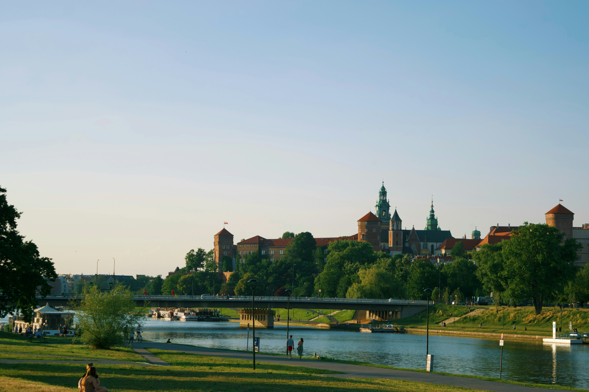
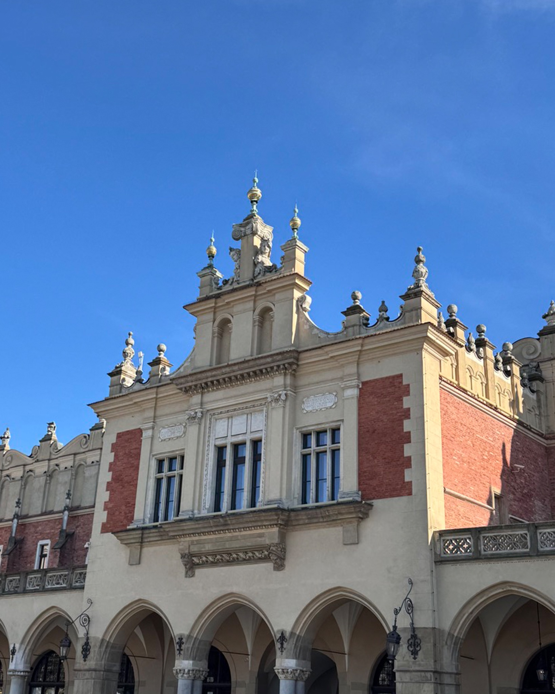
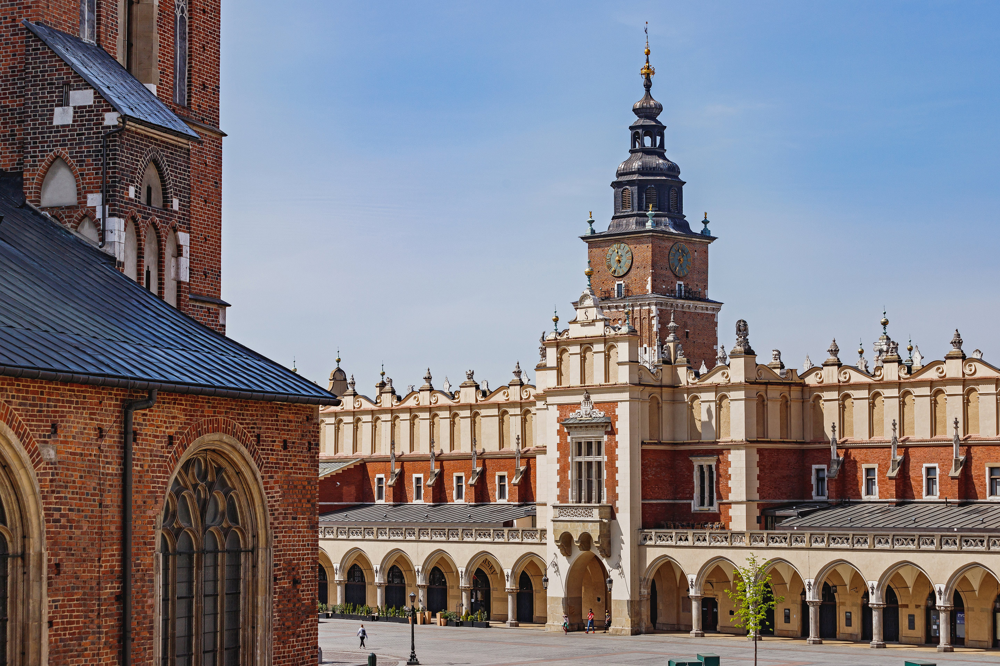
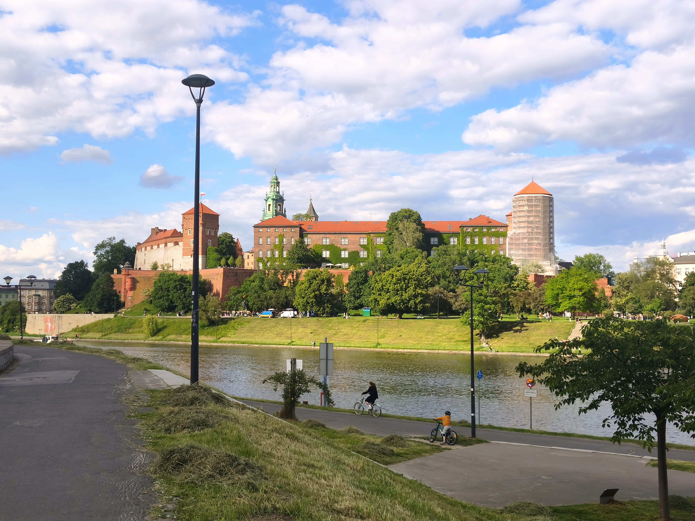
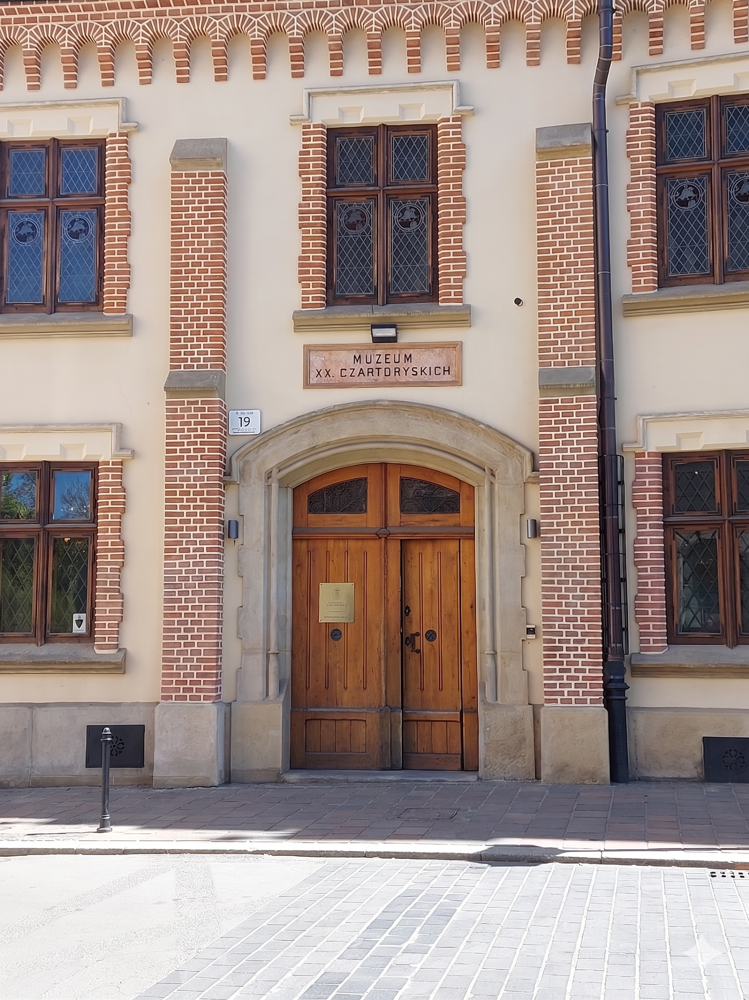
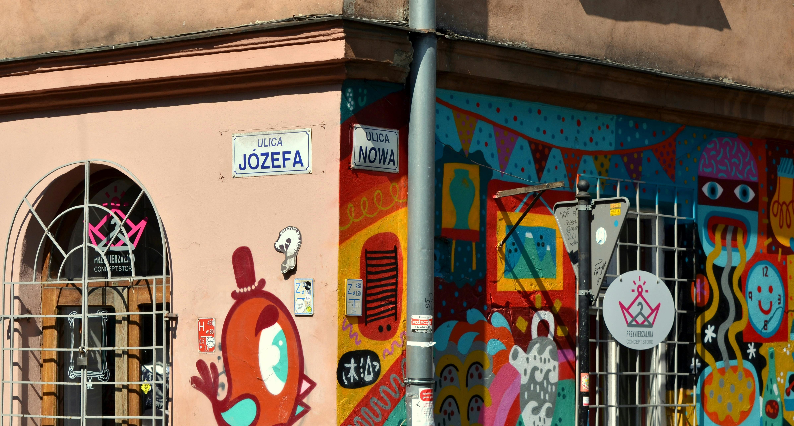
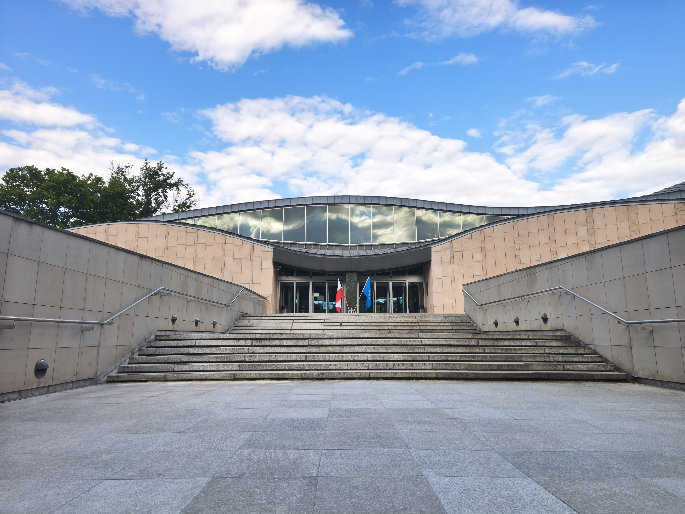
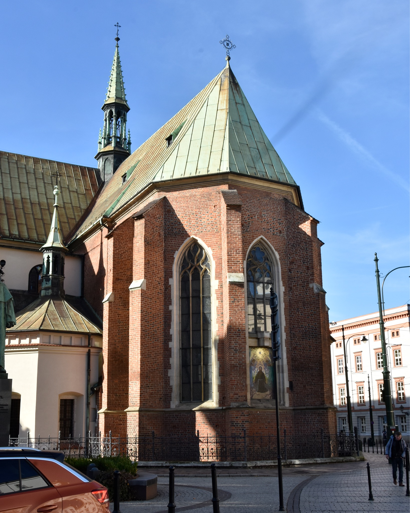
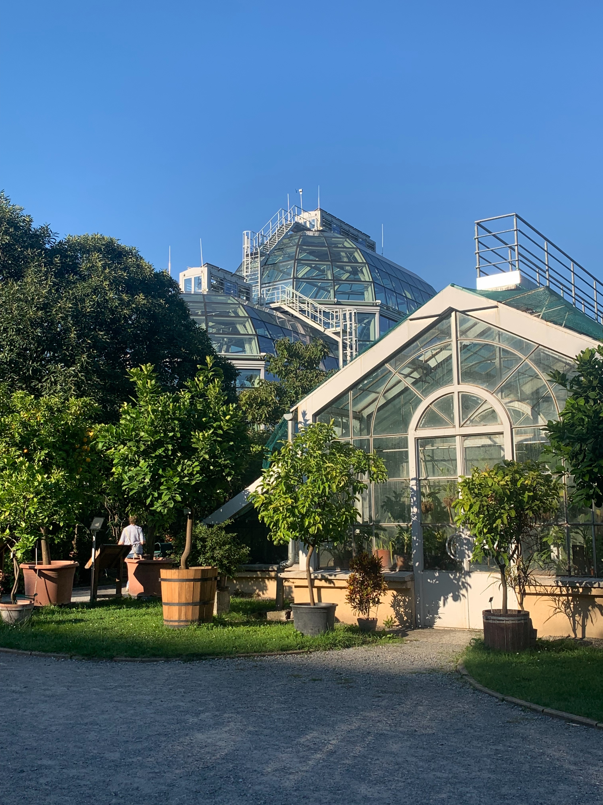

Twój krakowski przewodnik
Your Kraków guide
Oddajemy w Twoje ręce ten przewodnik, byś mógł poczuć Kraków dokładnie tak, jak my go czujemy – bez pośpiechu i turystycznej rutyny. Znajdziesz tutaj sprawdzone patenty na to, jak się poruszać i o czym pamiętać, aby Twój pobyt był maksymalnie komfortowy.
We're delighted to share this guide with you so you can experience Kraków just as we do – without the rush or the usual tourist routines. Inside you'll find insider tips on how to navigate the city and essential reminders to ensure your stay is as seamless and comfortable as possible.
O KRAKOWIE
ABOUT KRAKÓW
Kraków to jedno z najstarszych i najpiękniejszych miast w Polsce, w którym wielowiekowa historia przeplata się z nowoczesnym rytmem metropolii. Wybierając Electrę przy Cieszyńskiej 9, zamieszkasz na styku dwóch fascynujących światów.
Kraków is one of Poland's oldest and most beautiful cities, where centuries of history continuously intertwine with the rhythm of a modern metropolis. By choosing Electra at 9 Cieszyńska Street, you are staying right at the crossroads of two fascinating worlds.
Z jednej strony masz majestatyczne i pełne energii Stare Miasto, z drugiej – kameralną Krowodrzę, która urzeka spokojem i kojącą bliskością natury. Te dwa odmienne oblicza Krakowa idealnie się tu przenikają, tworząc unikalną przestrzeń pełną inspirujących kontrastów.
On one hand, you have the majestic and high-energy Old Town; on the other, the intimate charm of Krowodrza, which captivates with its tranquility and soothing proximity to nature. These two distinct sides of Kraków blend beautifully here, creating a unique space full of inspiring contrasts.
Dwa odmienne oblicza Krakowa — Stare Miasto i kameralna Krowodrza — idealnie się tu przenikają, tworząc unikalną przestrzeń pełną inspirujących kontrastów.
These two distinct sides of Kraków blend beautifully here, creating a unique space full of inspiring contrasts.
TRANSPORT
TRANSPORT
Najważniejsze punkty Starego Miasta i Krowodrzy masz na wyciągnięcie ręki, dlatego najbliższą okolicę najlepiej odkrywać na piechotę.
The highlights of both the Old Town and Krowodrza are right at your doorstep, making walking the absolute best way to explore the immediate neighborhood.
Pamiętaj, że w Polsce nie wolno przechodzić przez pasy na czerwonym świetle. Nawet jeśli ulica wydaje się pusta, taki skrót może zakończyć się mandatem.
Please remember that in Poland crossing the street on a red light is strictly prohibited. Even if the road seems completely empty, taking this shortcut can result in a fine.
Lokalna sieć tramwajów oraz autobusów jest świetnie rozwinięta i dociera w każdy zakątek miasta. To bardzo wygodny sposób, by szybko dostać się na miejsce i ominąć uliczne korki.
The local tram and bus network is highly developed and reaches every corner of the city. It's a very convenient way to get to your destination quickly while smoothly bypassing city traffic.
Tradycyjne bilety komunikacji miejskiej bez problemu kupisz w automatach na przystankach oraz bezpośrednio w większości tramwajów i autobusów. Pamiętaj tylko, że papierowy bilet musisz skasować natychmiast po wejściu do pojazdu.
You can easily buy traditional tickets at ticket machines at the stops, as well as directly inside most trams and buses. Just remember that you must validate a paper ticket immediately after boarding.
W wielu pojazdach znajdziesz również nowoczesne kasowniki z ekranem dotykowym obsługujące system tap and go. Wystarczy wybrać bilet na ekranie, a następnie zbliżyć kartę lub smartfon. Bilet automatycznie przypisze się do Twojego urządzenia, więc w razie ewentualnej kontroli wystarczy zbliżyć do czytnika kontrolera tę samą kartę lub telefon, którym płaciłeś.
Prefer digital tickets? In many vehicles, you'll find modern touch-screen validators with a tap and go system. Just select your ticket on the screen and tap your payment card or smartphone. The ticket is automatically linked to your device so if there's a ticket inspection, simply tap the exact same card or phone you used to pay against the controller's reader.
To lokalny niezbędnik, który szybko wyznaczy dla Ciebie najbardziej optymalną trasę i sprawdzi aktualne rozkłady jazdy. Z poziomu tej aplikacji za pomocą kilku kliknięć kupisz też bilet komunikacji miejskiej.
This is a local essential. It quickly finds the most optimal route for you and checks real-time schedules. You can also purchase public transport tickets directly through the app with just a few taps.
Jeśli potrzebujesz komfortowego transportu pod same drzwi, postaw na sprawdzone i bezpieczne rozwiązania. Uber, Bolt i Free Now działają tu bardzo sprawnie, gwarantując wygodny powrót o każdej porze.
If you need comfortable, door-to-door transport, opt for trusted and secure solutions. Uber, Bolt and Free Now work very smoothly here, guaranteeing a convenient ride back at any time.
Miasto jest pełne elektrycznych hulajnóg na wynajem, które błyskawicznie odblokujesz za pomocą aplikacji w smartfonie. To świetna alternatywa na szybkie przemieszczanie się na krótkie dystanse.
The city is full of electric scooters for rent, which you can unlock in seconds via a smartphone app. They are a great alternative for quick, short-distance trips.
Pamiętaj, że niemal całe centrum Krakowa oraz Krowodrza objęte są strefą płatnego parkowania. Swój postój opłacisz w ulicznych parkomatach lub za pomocą dedykowanych aplikacji mobilnych.
Keep in mind that almost the entire city center and Krowodrza are covered by a paid parking zone. You can pay for parking at street parking meters or via dedicated mobile apps.
W Krakowie obowiązuje SCT obejmująca niemal całe miasto w jego granicach administracyjnych. Do Strefy swobodnie wjadą pojazdy:
Kraków has a LEZ covering almost the entire city within its administrative boundaries. The following vehicles can enter the zone freely:
W przypadku aut niespełniających tych norm wjazd do miasta możliwy jest po wykupieniu czasowego uprawnienia. Opłatę wniesiesz online – system obsługi i płatności funkcjonuje przez stronę sct.zdmk.krakow.pl oraz aplikację mKraków.
If your car doesn't meet these standards, you can still enter the city by purchasing a temporary permit. You can pay the fee online – the system and payments are handled via the sct.zdmk.krakow.pl website and the mKraków app.
ZASADY
RULES
W Polsce spożywanie alkoholu na ulicach, w parkach czy na bulwarach jest nielegalne i często kończy się mandatem.
In Poland consuming alcohol on the streets, in parks or on the boulevards is strictly illegal and often results in a fine.
Historyczne krakowskie kamienice mają ogromny urok, ale też doskonałą akustykę, dlatego pamiętaj o przestrzeganiu ciszy nocnej po 22:00.
Historic Kraków tenement houses have incredible charm but they also have excellent acoustics. Please remember to respect the quiet hours after 10:00 PM.
Choć krakowskie gołębie chętnie zapozują do zdjęcia, rzucanie im okruszków chleba jest zabronione i szkodzi tutejszej zabytkowej architekturze.
Even though Kraków's pigeons are always ready to pose for a photo, throwing breadcrumbs is forbidden as it damages the historic architecture.
Unikaj wsiadania do przypadkowych aut bez wyraźnego logo korporacji i cennika. To nie tylko ryzyko mocno zawyżonego rachunku, ale też kwestia Twojego bezpieczeństwa. Wybieraj wyłącznie sprawdzone aplikacje lub licencjonowane taksówki.
Refrain from getting into random cars that lack a clear company logo and a visible price list. It's not just a risk of getting a highly inflated bill but also a matter of your safety. Stick to trusted ride-hailing apps or licensed taxis.
Ta prosta zasada uchroni Cię przed finansową niespodzianką i pozwoli w pełni cieszyć się atrakcją.
This simple rule will save you from an unpleasant financial surprise and let you fully enjoy the attraction.
W popularnych miejscach, jak Rynek Główny, możesz natknąć się na osoby zaczepiające turystów i zapraszające ich do „najlepszych" klubów czy wyjątkowych atrakcji. Takie propozycje często kończą się zawyżonymi rachunkami, presją na płatność, a czasem także niebezpiecznymi sytuacjami – jak podawanie alkoholu w podejrzanych okolicznościach i upijanie. Nasza rada? Jeśli ktoś Cię zaczepi, uprzejmie odmów i kontynuuj spacer. Wybieraj miejsca z dobrymi opiniami lub polecane przez miejscowych – to bezpieczniejsza i znacznie przyjemniejsza opcja.
In popular areas like the Main Square, you might be approached by people inviting you to the "best" clubs or "exclusive attractions". These offers often end in heavily inflated bills and sometimes even dangerous situations like being served suspicious alcohol and intentionally intoxicated. Our advice? If someone approaches you, politely decline and keep walking. Choose places with good reviews or those recommended by locals – it's a much safer and more enjoyable option.
BEZPIECZEŃSTWO
SAFETY
Uważaj na kieszonkowców. W bardzo zatłoczonych miejscach takich jak płyta Rynku czy tramwaje łatwo stracić czujność i paść ofiarą kieszonkowców. Trzymaj telefon i dokumenty w bezpiecznym miejscu, by zamiast na pilnowaniu kieszeni, móc w pełni skupić się na zwiedzaniu.
Beware of pickpockets. In very crowded places, like the Main Square or on public trams, it's easy to let your guard down. Keep your phone and documents in a secure place so you can focus entirely on exploring rather than watching your pockets.
Uniwersalny numer 112. W razie awaryjnych sytuacji zdrowotnych lub losowych wybierz ten bezpłatny, europejski numer. Szybko połączysz się z dyspozytorem, który zorganizuje dla Ciebie niezbędną pomoc.
Universal emergency number 112. In case of medical or unexpected emergencies, dial this toll-free European number. You will be quickly connected to a dispatcher who will organize the necessary assistance.
Jeśli potrzebujesz zakupić leki, w pobliżu działają świetnie zaopatrzone punkty apteczne otwarte 24/7:
If you need to purchase medication, there are well-stocked, round-the-clock pharmacies located nearby:
Apteka Dr. Max
Dr. Max Pharmacy
ul. Karmelicka 23
🚋 17 min 🚶 19 min
Apteka DOZ
DOZ Pharmacy
ul. Kronikarza Galla 26
🚋 18 min 🚶 25 min
Apteka Gemini
Gemini Pharmacy
ul. Krowoderskich Zuchów 14
🚋 18 min 🚶 29 min
Płatności kartą są tutaj bardzo powszechne. Zbliżeniowo zapłacisz niemal wszędzie – od biletomatu po ulubioną kawiarnię.
Card payments are very common here. You can pay contactlessly almost everywhere – from public ticket machines to your favorite neighborhood café.
Napiwek jest mile widziany, ale nieobowiązkowy.
Tipping is appreciated but entirely optional.
Zanim hojnie nagrodzisz obsługę, rzuć okiem na podsumowanie – lokale często automatycznie doliczają opłatę serwisową. Warto to sprawdzić, by nie płacić podwójnie.
Before you generously reward the staff, take a quick look at the bill summary. Many places automatically add a service charge so it's always worth checking to avoid paying twice.
Oficjalną polską walutą jest PLN (polski złoty).
The official Polish currency is PLN.
Gniazdka, z którymi się tutaj zetkniesz, to gniazdka typu C i E, czyli klasyczny europejski standard. Jeśli podróżujesz z Wielkiej Brytanii lub innego kontynentu, upewnij się, że masz w walizce odpowiednią przejściówkę.
The sockets you'll find here are type C and E – the classic European standard. If you're traveling from the UK or another continent, make sure you have the right adapter.
Woda z kranu jest w Krakowie zdatna do picia. Śmiało możesz wlewać ją do swojego bidonu, zamiast kupować wodę w plastikowych butelkach.
Tap water in Kraków is perfectly safe to drink. Go ahead and fill up your reusable bottle instead of buying water in single-use plastic.
Bezpieczne i darmowe Wi-Fi dostępne jest w większości lokali. Wystarczy, że zapytasz obsługę o login i hasło.
Safe and free Wi-Fi is available in most venues. Just ask the staff for the network name and password.
Kraków to nie tylko atrakcja turystyczna, ale też miejsce życia mieszkańców. Zachowuj się z szacunkiem – dzięki temu Twoja wizyta będzie przyjemna dla wszystkich.
Kraków is not just a tourist attraction; it is a living city home to thousands of residents. Please be respectful of the local community and surroundings. This ensures your visit is pleasant for everyone, including our neighbors.
Z PIERWSZYCH STRON PRZEWODNIKÓW
STRAIGHT FROM THE GUIDEBOOKS
W Square wierzymy, że o wyjątkowości pobytu świadczą nie tylko piękne wnętrza, ale i odkrywanie miejsc z duszą. Przed Tobą nasz kuratorski wybór punktów, które definiują współczesny charakter miasta – od tętniącej energią klasyki Starego Miasta po kameralne przystanie spokoju na Krowodrzy. Oto miejsca, które sprawiają, że Kraków jest tak inspirujący.
At Square, we believe that an exceptional stay is defined not only by beautiful interiors but also by discovering places with a soul. Before you is our curated selection of highlights that define the modern character of the city – from the high-energy classics of the Old Town to the intimate havens of tranquility in Krowodrza. These are the places that make Kraków so inspiring.

MUST-SEEMUST-SEEArchitektoniczna perła Rynku Głównego i symbol krakowskiej tradycji handlowej. Pod monumentalnymi sklepieniami wciąż tętni życie – znajdziesz tu kunsztowne rzemiosło i pamiątki z duszą. To jednak miejsce o wielu obliczach: pod ziemią skrywa interaktywne muzeum Rynek Podziemny, a na piętrze – Galerię Sztuki Polskiej.
An architectural gem of the Main Market Square and a symbol of Kraków's trading heritage. Life still bustles beneath its monumental vaults, where you'll find exquisite craftsmanship and souvenirs. Yet, this is a venue of many faces: it conceals the interactive Underground Museum below and houses the Gallery of Polish Art upstairs.

MUST-SEEMUST-SEENiewiele miejsc w Europie budzi tak silne emocje. Ta gotycka świątynia to nie tylko dom dla słynnego hejnału rozbrzmiewającego z wyższej wieży, ale także skarbiec sztuki sakralnej. W jej wnętrzu czeka na Ciebie mistrzowski ołtarz Wita Stwosza – jedno z najcenniejszych dzieł późnego gotyku – oraz hipnotyzujące, błękitno-złote polichromie autorstwa Jana Matejki.
Few places in Europe evoke such profound emotion. This Gothic temple is not only home to the famous trumpet call sounding from its higher tower, but also a treasury of sacred art. Inside, Veit Stoss's masterful altarpiece – one of the most precious works of the Late Gothic – awaits you, alongside the mesmerizing, blue-and-gold polychromies by Jan Matejko.

MUST-SEEMUST-SEEWzgórze Wawelskie to esencja królewskiego splendoru i serce polskiej historii. Renesansowy dziedziniec arkadowy zachwyca architekturą najwyższej próby, a spacer wzdłuż murów obronnych oferuje kojący widok na zakole Wisły. To idealne miejsce na niespieszne popołudnie, gdzie panorama miasta zapiera dech w piersiach.
Wawel Hill is the essence of royal splendor and the heart of Polish history. The Renaissance arcaded courtyard captivates with architecture of the highest caliber, while a stroll along the defensive walls offers a soothing view of the Vistula River bend. It's the perfect setting for a leisurely afternoon, where the city panorama will simply take your breath away.

MUST-SEEMUST-SEEJedna z najbardziej prestiżowych i starannie wyselekcjonowanych kolekcji sztuki w Europie. To właśnie tutaj możesz stanąć twarzą w twarz ze słynną „Damą z gronostajem" Leonarda da Vinci czy pełnym dramatyzmu „Krajobrazem z miłosiernym Samarytaninem" Rembrandta. Muzeum łączy w sobie kameralność prywatnych zbiorów z rozmachem światowego formatu, zapewniając zwiedzającym doświadczenie estetyczne na najwyższym poziomie.
One of the most prestigious and meticulously curated art collections in Europe. It's here that you can stand face-to-face with Leonardo da Vinci's famous Lady with an Ermine or Rembrandt's dramatic Landscape with the Good Samaritan. The museum beautifully blends the intimacy of a private collection with world-class scale, ensuring an aesthetic experience of the highest order.
Monumentalny Gmach Główny to serce polskiego modernizmu i sztuki XX wieku. Od spektakularnych wystaw czasowych po stałe galerie prezentujące mistrzowski polski design – to miejsce pulsuje kreatywną energią. Doskonała propozycja dla każdego, kto ceni najwyższą jakość formy i chce poczuć kulturalny rytm współczesnego Krakowa, bez konieczności dalekich wypraw.
The monumental Main Building is the heart of Polish modernism and 20th-century art. From spectacular temporary exhibitions to permanent galleries showcasing masterfully designed Polish pieces, this space pulses with creative energy. An excellent choice for anyone who appreciates premium form and wishes to feel the cultural rhythm of modern Kraków, right in your neighborhood.

MUST-SEEMUST-SEEFascynująca dzielnica pełna kulturowego autentyzmu i twórczej wolności, która do dziś zachwyca kontrastami. Zabytkowe synagogi sąsiadują tu z niezależnymi galeriami sztuki i autorskimi kawiarniami. Spacer po klimatycznych zaułkach ulicy Szerokiej czy Placu Nowego to inspirująca podróż w czasie, która doskonale dopełni odkrywanie różnorodnych oblicz Krakowa.
A fascinating neighborhood brimming with cultural authenticity and creative freedom, which continues to captivate with its contrasts. Historic synagogues stand side-by-side with independent art galleries and artisanal cafés. Wandering through the atmospheric lanes of Szeroka Street or Plac Nowy is an inspiring journey through time that perfectly complements your discovery of Kraków's diverse faces.

POZA SZLAKIEMOFF THE BEATEN PATHWyjątkowa przestrzeń, w której japoński minimalizm i harmonia spotykają się z historycznym duchem Krakowa. Położone na brzegu Wisły muzeum zachwyca nie tylko falującą architekturą projektu Araty Isozakiego, ale przede wszystkim subtelną estetyką prezentowanej sztuki. Mała Japonia w Krakowie z kameralną kawiarnią i przepięknym widokiem na Wawel – idealne miejsce na ucieczkę od zgiełku i chwilę estetycznego wytchnienia.
An exceptional space where Japanese minimalism and harmony meet the historic spirit of Kraków. Perched on the banks of the Vistula River, the museum enchants not only with its undulating architecture designed by Arata Isozaki but primarily with the subtle aesthetics of the art on display. A slice of Japan in Kraków, complete with an intimate café and a stunning view of Wawel Castle – the ideal escape from the bustle for a moment of aesthetic serenity.

POZA SZLAKIEMOFF THE BEATEN PATHChoć z zewnątrz świątynia urzeka klasycznym gotykiem, jej wnętrze skrywa jeden z najbardziej poruszających i unikalnych manifestów polskiej secesji. To tutaj możesz podziwiać genialne, wielkoformatowe dzieła Stanisława Wyspiańskiego – hipnotyzujące, pełne ekspresji polichromie oraz monumentalny witraż „Bóg Ojciec". W słoneczne dni barwne szkło oblewa wnętrze bazyliki mistycznym, wielobarwnym światłem, tworząc atmosferę, która na długo zapada w pamięć.
While the exterior charms with classic Gothic lines, the interior hides one of the most moving and unique manifestos of Polish Art Nouveau. Here you can admire the brilliant, large-scale masterpieces of Stanisław Wyspiański – mesmerizing, highly expressive polychromies and the monumental God the Father stained glass window. On sunny days the vibrant glass bathes the interior in a mystical, multicolored light, creating an unforgettable atmosphere.

POZA SZLAKIEMOFF THE BEATEN PATHNajstarszy w Polsce, działający już od blisko 250 lat, ogród botaniczny. Spacer pośród wiekowych alei, zabytkowych dziewiętnastowiecznych szklarni i tysięcy rzadkich, egzotycznych gatunków roślin z całego świata to prawdziwa uczta dla zmysłów. Idealny kierunek na niespieszne popołudnie, kiedy masz ochotę zwolnić i zanurzyć się w kojącej roślinności.
The oldest botanical garden in Poland, flourishing for nearly 250 years. A stroll among centuries-old avenues, historic 19th-century greenhouses, and thousands of rare, exotic plant species from around the globe is a true feast for the senses. The ideal destination for a leisurely afternoon when you wish to slow down and immerse yourself in soothing greenery.
Unikalna perła krakowskiego modernizmu międzywojennego w zasięgu krótkiego spaceru. Kościół św. Szczepana urzeka rzadko spotykanym wnętrzem w stylu art déco, gdzie monumentalna surowość bryły harmonizuje z kunsztownymi, geometrycznymi detalami. To niezwykłe miejsce, omijane przez masową turystykę, zachwyci każdego konesera architektury szukającego ciszy i nieoczywistych form.
A unique gem of interwar Polish modernism within a short walk from your door. Church of St. Szczepan captivates with a rare Art Deco interior, where the monumental simplicity of the structure harmonizes beautifully with intricate, geometric details. Unspoiled by mass tourism, this extraordinary venue will delight any architecture connoisseur seeking quietude and unconventional forms.
Założony w XIX wieku na wzór ogrodów wiedeńskich kameralny park o wyjątkowo wielkomiejskim, a zarazem zacisznym charakterze. Spacerując zadbanymi alejkami, odkryjesz galerię modernistycznych rzeźb plenerowych, urokliwy staw oraz przepiękne roślinne aranżacje. Znajduje się tutaj również plac zabaw, stoły piknikowe do gry w szachy, pitniki, gabinet grabowy z czytelnią i biblioteczką do wymiany książek oraz wydzielona strefa dla palaczy.
Established in the 19th century inspired by Viennese gardens, this intimate park boasts an exceptionally sophisticated, urban yet peaceful character. Walking along its manicured paths, you'll discover an open-air gallery of modernist sculptures, a charming pond and beautiful floral arrangements. It features a playground, picnic chess tables, drinking fountains, a hornbeam grove with a reading area and a book-sharing library, and a designated smoking zone.
Miejsce o surowej, historycznej elegancji, skryte w cieniu XIX-wiecznych fortyfikacji Twierdzy Kraków. Park Kleparski otacza monumentalny Fort Kleparz, tworząc intrygujący mariaż zabytkowej architektury militarnej i parkowej zieleni. Ten nieoczywisty kierunek na spacer dla pasjonatów historii i osób szukających niebanalnych kadrów, oferuje głęboki oddech z dala od klasycznego zgiełku.
A place of raw, historic elegance, hidden in the shadow of the 19th-century fortifications of the Kraków Fortress. Park Kleparski surrounds the monumental Fort Kleparz, creating an intriguing marriage of historic military architecture and park greenery. This unconventional walking destination for history enthusiasts and those seeking striking frames offers a deep breath of fresh air away from the classic city bustle.